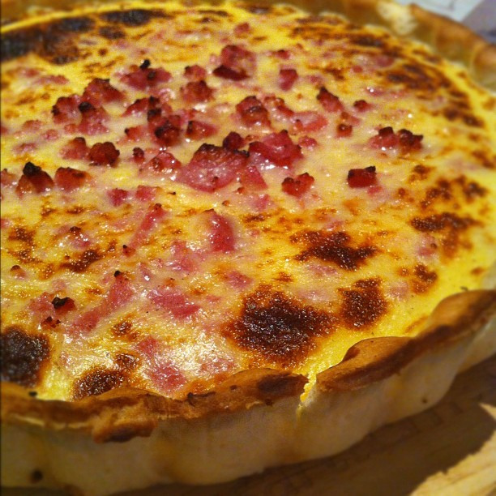
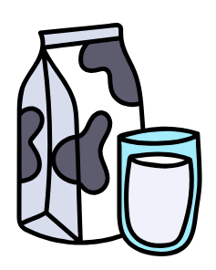
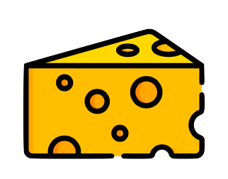

La quiche lorraine

Quiche is probably one of the most common French dish. It is basically a pie with a mixture of eggs and milk and then you can add what you want. The most famous is the one from the Lorraine region (in the northeast of France) with diced ham and cheese.
Ingredients (for 4 persons)
For the pastry
|
250g of flour |
|
125g of butter (room temperature) |
|
1 yolk |
|
water |
 |
A pinch of salt |
For the mixture
|
4 eggs |
|
200g of smoked diced ham |
|  |
400ml of milk (depending on the size of the dish) |
|  |
100g of grated cheese (emmental if possible) |
|
Salt and pepper |
Preparation
|
Preheat your oven at 180°C |
|
In a bowl, whisk the yolk. |
| Add the butter, the salt and the flour. If it is a little hard to mix add a little of water. |
| In a bowl, whisk the yolk. |
| You should get a perfect round dough. |
|
Put cling film on it and save it for later |
|
In a pan, cook the smoked diced ham until it starts to color |
|
Empty the pan on a plate with kitche towel on it. This way the kitchen towel will absorb the fat. |
|
In a bowl, whisk the eggs and add the salt and pepper. |
|
Add the grated cheese |
|
Add the milk. If you have a small quiche dish don't put the right amount of milk. |
|
Roll out the pastry with a rolling pin on a sheet of baking paper. You should get a thin pastry. To make rolling out easier, you can put a sheet of baking paper on top of the pastry. |
|
Put the pastry in the quiche dish and stick a fork into it to make small holes. Watch out the hole must not be too deep or the mixture will leak |
|
Put the ham in the dish than add the mixture. You might need to spread the ham and the cheese in the dish. |
|
Bake for 30 to 45 minutes |
|
Take it out of the oven. You can eat it either hot or cold. |
|
Usuallly we would eat it with salad (and "vinaigrette") on the side. |
Bon Appétit !